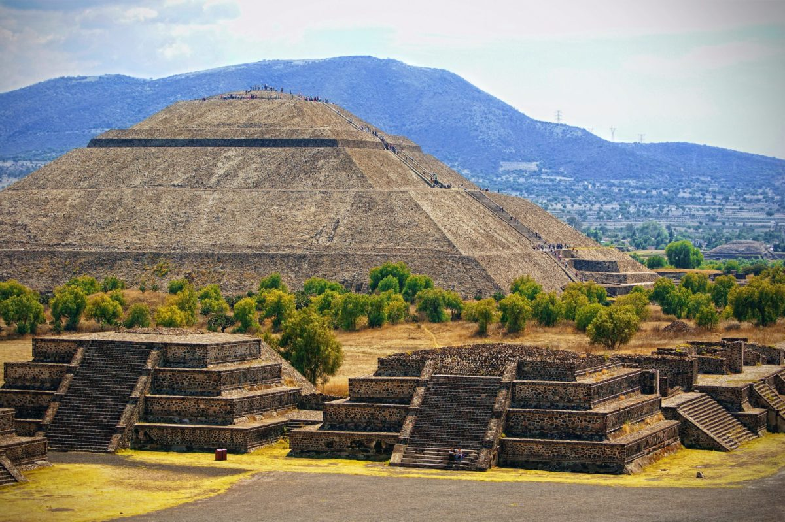
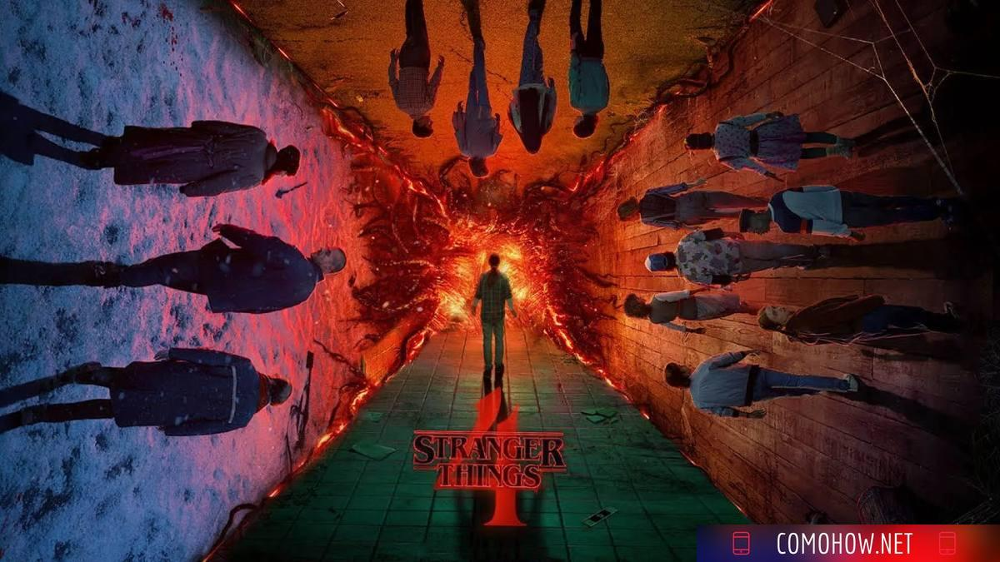

turismo en la ciudad de mexico

teotihuacan
visite este lugar en abril del 2022
Teotihuacán fue fundada en una posición poco común en su época con respecto al patrón de asentamiento propio de la cuenca de México durante el Preclásico Medio. La mayoría de los asentamientos de mayor envergadura en la región se localizaban en la ribera del sistema lacustre del Anáhuac o muy cerca de ella. Cuicuilco y Copilco en el sur; Ticomán, El Arbolillo, Zacatenco,
temporada 4

Excelente serie
la recomiendo para ver en familia
Reseñas de películas
Los vengadores Endgame

Excelente película para culminar el viaje MCU
Lo vi hoy con mis hijos y les encantó. Deberías tener una mínima comprensión previa de la historia, o te perderás el 40% de la diversión. Deberías ver Infinity War, Civil War, Pantera Negra, La era de Ultron, Ant-Ma